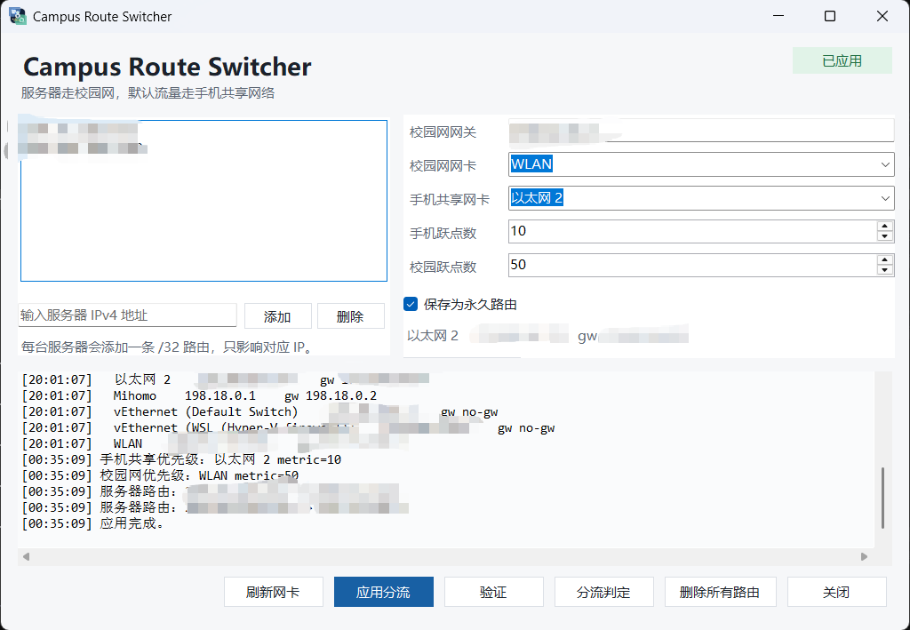

校园网智能分流工具 — 服务器走校园网，默认流量走手机共享网络

如果你同时拥有校园网和手机共享网络两块网卡，Campus Route Switcher 可以让指定服务器（如教务系统、SSH 等）走校园网，而日常上网流量走手机网络，实现自动分流，无需手动切换。
为每台服务器添加 /32 精确路由，指向校园网网关；默认流量通过手机网卡的低跃点数优先出口。
自动识别 WLAN 校园网卡和以太网手机共享网卡，检测网关地址，一键完成配置。
扫描本地 Clash Verge Rev 配置文件，确认服务器 IP 是否有 DIRECT 规则，避免代理绕路。
自动测试服务器连通性和出口网卡，判定分流是否生效，兼容 TUN 模式。
最小化到系统托盘，检测到网络变化后自动重新应用路由，无需手动操作。
可选保存为永久路由，重启后依然生效；也可随时恢复默认设置。
CampusRouteSwitcher.exe（需要管理员权限）。210.35.132.1），自动检测可填入。